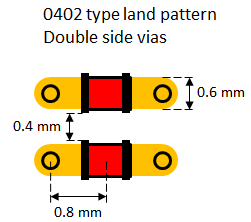
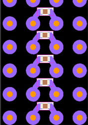
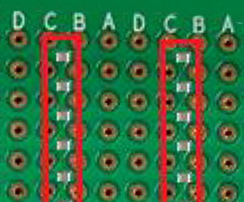

DPS128 / DPS64 capacitor requirements
For improved noise suppression, we recommend using small ceramic capacitors between force and return lines of the DPS128 / DPS64 channels. Additional capacitor requirements must be considered for ganged channels.
The following sections are available in this topic:
Decoupling circuit requirements for improved noise suppression
For improved noise suppression, we recommend to put 0402 type capacitors between the force and return lines of the DPS channels. As DPS related noise shows a spectral content of 100 MHz+, the capacitance value should be 10 nF. For VI like applications a maximum of 2.2 nF is recommended.
Place the capacitors close to the pogo pins. Use capacitors with the following specification:
| Capacitance: |
10 nF for DPS like applications 2.2 nF for VI like applications |
|
| Package: | 0402 | |
| Type: | X7R |
Take special care to keep the impedance of the decoupling circuit as small as possible. This includes also the parasitic effects such as trace inductance and via inductance (mounting inductance).
In order to keep the parasitic inductance at the minimum, we recommend placing the capacitor on the opposite side of the pogo block just between the force and return via. An alternative solution that can be used if no VHD pogo blocks are installed is to place the capacitors on the bottom side.
If the DUT board layout allows, it is also advantageous to distribute additional capacitors on the power plane. This allows an even better suppression of high-frequency noise. By placing additional capacitors the overall impedance can be lowered.
Take care regarding the vias of these capacitors. We recommend having the vias in pads. If the board technology does not allow this, use two vias per pin with wider hole diameter as shown below.
Capacitor layout for improved noise suppression:
|
 |
The example on the left shows how to optimize the via layout to achieve lowest mounting inductance. To achieve the best high frequency noise suppression, use special capacitors with an even lower equivalent series inductance like low-ESL LW reverse type capacitors, feed-through (three-terminal) capacitors. |
Bottom side placement of noise suppression capacitors
Placing the noise suppression capacitors on the bottom side of the DUT board is supported only for the HD type pogo block.
Placing the noise suppression capacitors on the bottom side of the DUT board is not supported for the VHD type pogo block of the E8023PB and E8023PK pogo cable assemblies and is also not supported for VHD type pogo cable assemblies such as EK751VHDA of the DPS128 successor XPS256 on V93000 EXA Scale Systems.
If you use DUT boards with the capacitors placed on the bottom side, you cannot upgrade your system to the VHD type pogo cable assemblies, and you cannot use such a DUT board on a system that is already equipped with the VHD type pogo cable assemblies.
For the different types of pogo blocks, see also Pogo block compatibility.
Equipment damage.
If you dock a DUT board with capacitors placed on the bottom side of the pogo pad area on a system equipped with VHD pogo blocks in the related positions, the DUT board and the pogo pins will be damaged.
Never dock a DUT board with capacitors placed on the bottom side of the pogo pad area on a system equipped with VHD pogo blocks in the related positions.
Noise suppression capacitors of type 0402 can alternatively be placed on the bottom side of the DUT board between the pogo landing pads if no VHD pogo blocks are installed.
- meets electrical requirement for placing the capacitors close to the pogo pins,
- does not conflict with the pogo landing pattern if only HD type pogo blocks are installed, and
- minimizes the effort for routing.
|
Example layout:  |
Capacitors on the bottom side:  |
For the maximum distance to the pogo pin landing pads, place the capacitors in the middle of the four adjacent pads. Make sure there is adequate clearance between the four outer corners of the capacitor pads and the pogo pin landing pads.
Capacitor requirements for ganged channels
While the cap-less mode1) of DPS128 in PMU operating mode of SmarTest 7 or SmarTest 8 supports the operation of individual channels without external capacitors2), capacitors must be used for all ganged channels in order to avoid oscillations.
We recommend adding also the capacitors for improved noise suppression as defined above.
Minimum decoupling capacitance for stable ganged operation:
| Number of DPS128/64 channels ganged | Option3) | Recommended capacitance and number of capacitors | |||||
|---|---|---|---|---|---|---|---|
| 100 nF | 2.2 μF | 10 μF | 22 μF | 100 μF | 220 μF | ||
| 2 | 1 | 2 | 3 | ||||
| 2 | 2 | 1 | |||||
| 4 | 1 | 4 | 5 | ||||
| 2 | 4 | 2 | |||||
| 3 | 4 | 2 | |||||
| 8 | 1 | 8 | 8 | ||||
| 2 | 8 | 5 | |||||
| 3 | 8 | 1 | |||||
| 12 | 1 | 12 | 8 | ||||
| 2 | 12 | 2 | |||||
| 16 | 1 | 16 | 3 | ||||
| 32 | 1 | 32 | 4 | ||||
| 2 | 32 | 2 | |||||
| 48 | 1 | 48 | 6 | ||||
| 2 | 48 | 3 | |||||
| 64 | 1 | 64 | 8 | ||||
| 2 | 64 | 4 | |||||
- Use capacitor voltage derating of 50%.
- Low ESR ceramic or tantalum capacitors can be used for higher capacitance values.
- Place the capacitors for ganged channels as close as possible to the DUT pin.
| Capacitance | Manufacturer | Part number | Description |
|---|---|---|---|
| 100 nF | Murata | GRM155R71E104KE14 | Cap Cer 25V X7R ±10% ESR=20m |
| AVX | 04023C104KAT2A | Cap Cer 25V X7R ±10% ESR=19m | |
| KEMET | C0402C104K4RAC | Cap Cer 16V X7R ±10% ESR=24m | |
| AVX | 0402YC104KAT2A | Cap Cer 16V X7R ±10% ESR=15m | |
| 2.2 μF | Murata | GRM188Z71C225ME43 | Cap Cer 16V X7R ±20% ESR=7m |
| AVX | 0603YC225KAT2A | Cap Cer 16V X7R ±10% ESR=3m | |
| Murata | GRM188R71A225KE15 | Cap Cer 10V X7R ±10% ESR=6m | |
| AVX | 0603ZC225KAT2A | Cap Cer 10V X7R ±10% ESR=3m | |
| KEMET | C0603C225K8RAC | Cap Cer 10V X7R ±10% ESR=7m | |
| 10 μF | Murata | GRM188R61C106KAAL | Cap Cer 16V X5R ±10% ESR=5m |
| Murata | GRM188R61A106KAAL | Cap Cer 10V X5R ±10% ESR=5m | |
| AVX | 0603ZD106KAT2A | Cap Cer 10V X5R ±10% ESR=3m | |
| KEMET | C0603C106M8PAC | Cap Cer 10V X5R ±20% ESR=5m | |
| 22 μF | Murata | GRM187R61A226ME15 | Cap Cer 10V X5R ±20% ESR=4m |
| AVX | 0603ZD226MAT2A | Cap Cer 10V X5R ±20% ESR=2m | |
| Murata | GRM219R61C226ME15 | Cap Cer 16V X5R ±20% ESR=4m | |
| AVX | 0805ZD226MAT2A | Cap Cer 10V X5R ±20% ESR=3m | |
| KEMET | C0805C226M8PAC | Cap Cer 10V X5R ±20% ESR=2m | |
| 100 μF | Murata | GRM21BR60J107ME15 | Cap Cer 6.3V X5R ±20% ESR=2m |
| Murata | GRM31CR61A107ME05 | Cap Cer 10V X5R ±20% ESR=3m | |
| Murata | GRM31CR60J107ME39 | Cap Cer 6.3V X5R ±20% ESR=3m | |
| AVX | 12066D107MAT2A | Cap Cer 6.3V X5R ±20% ESR=5m | |
| KEMET | C1206C107M9PAC | Cap Cer 6.3V X5R ±20% ESR=2m | |
| KEMET | T520B107M006ATE015 | Cap Tant 6.3V ±20% ESR=15m | |
| 220 μF | KEMET | T520C227M006ATE015 | Cap Tant 6.3V ±20% ESR=15m |
| KEMET | T520D227M006ATE015 | Cap Tant 6.3V ±20% ESR=15m | |
| AVX | TCJD227M006R0015 | Cap Tant 6.3V ±20% ESR=15m |
Functional changes
- Introduced in SmarTest 7.3.3
- SmarTest 7.5.3 / 8.3.2: Capacitor requirements for ganged channels updated.